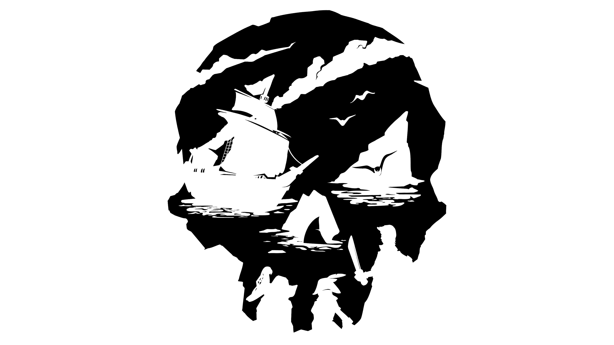
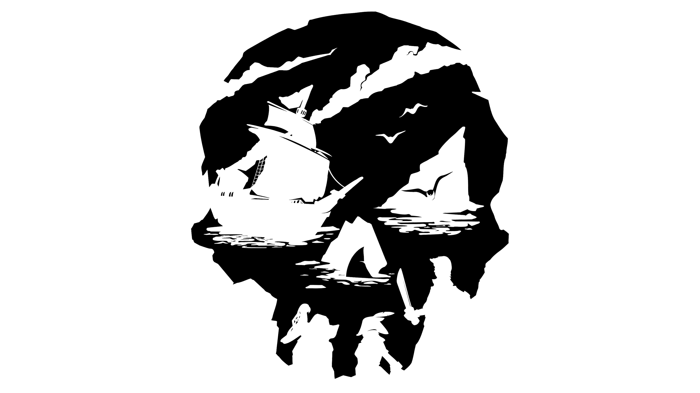

Qu'est-ce que l'alliance des marchands?
La société la plus raisonnable est l'Alliance des marchands, une organisation de commerçants guindés qui veulent simplement échanger des biens et gagner de l'argent. Certains regrettent de devoir employer des pirates pour atteindre leurs objectifs.
Une paie généreuse attend les pirates qui livreront des animaux attrapés sur les îles, des biens divers, et des cargaisons délicates qui seront gâchées si on n'en prend pas bien soin. L'Alliance des marchands protège les siens... mais comprennent-ils vraiment la vocation pirate ?
 


Les Voyages
Voyage de livraison
Lors de ces voyages, le joueur devra récupérer des marchandises chez un PNJ pour la livrer à un autre PNJ avec un délai de livraison à respecter.
Voyage de contrats marchands
Pour ce voyage, le joueur devra récupérer lui-même des marchandises sur des îles comme des animaux afin de les livrer.
Pour ce qui s’agit des animaux, les poules une fois capturées ne demanderont aucune attention, à l’inverse des cochons qui doivent être régulièrement nourri. Pour les serpents, il faut faire attention, car même s'ils ne demandent pas d’attention, ils peuvent quand même cracher du venin si le joueur passe trop près de lui.
Voyages d’expédition perdue
Le joueur devra suivre les traces d’un équipage perdu afin de retrouver la cargaison que transporter le navire grâce à des indices laissé en mer. Grâce aux indices, le joueur pourra récupérer la clé de la cabine du capitaine et il pourra alors récupérer plus de récompenses. Pour terminer ce voyage, le joueur devra rapporter le manifeste de fret pour le rendre à l’Alliance des marchands.

Les Bonus
Dès le niveau 15 de la société, vous débloquerez le pavillon d'émissaire qui vous permettra d'augmenter vos bénéfices lors de la vente d'objet de la société. Mais outre montrer son terrible ennui sur le jeu à ses amis, il n'y pas de grands bonus à être un marchand emérite.
Le Butin
Animaux, baril de poudre, plantes, textiles et rhum sont la monnaie d'échange pour les marchands.
Le Style
Quoi de mieux que de montrer votre passion pour les voyages et les animaux grâce à votre tenue et votre navire! Pour la maudique somme de 1.006.150 pièces d'or, vous pourrez devenir le pirate le plus coquet de Sea of Theives!